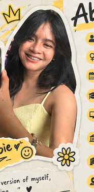

01
Basic Concepts of Ethics
Moral and non-moral standards, moral dilemmas, three levels of dilemmas, and why humans can be ethical.

Click each topic to open its lesson summary and personal reflection.
Moral and non-moral standards, moral dilemmas, three levels of dilemmas, and why humans can be ethical.
Freedom and responsibility, reason, impartiality, and feelings versus reason in moral decisions.
Culture, cultural relativism, respecting cultural differences, and ethical evaluation.
Filipino values, weaknesses of moral identity, Kohlberg's stages, and conscience-based decisions.
Selected learning activities from the Ethics course.
Classified real-life situations as individual, organizational, or systemic dilemmas and examined conflicting responsibilities.
Explored how cultural values shape moral behavior and why understanding does not mean blindly accepting every practice.
Applied the stages of moral development to situations such as the Medicine Dilemma and everyday decisions.
Used reporters' presentations, reviewers, screenshots, and Google Meet discussions as learning evidence.
Learning about Filipino moral identity and Kohlberg's stages of moral development made me realize that the way I make moral decisions can change as I grow and experience different situations.
As a Filipino, values such as pakikipagkapwa, respect, and concern for others can influence how I decide what is right and wrong. At the same time, I learned that I should not rely only on culture, feelings, or rules. I also need to use reason, fairness, and responsibility.
I see myself mostly in the Conventional Level because I value rules, order, safety, and the well-being of others. However, I now understand that following a rule does not automatically make something morally right if the rule is unfair or harmful.
Overall, Ethics helped me become more thoughtful and open-minded. I want to continue improving my moral decisions by thinking carefully, considering other people, and taking responsibility for my choices.
Ethics lesson presentations prepared and presented by classmates during the course, including discussion materials and visual aids.
Review materials and topic screenshots presented during Google Meet sessions and used for studying and reviewing the lessons.